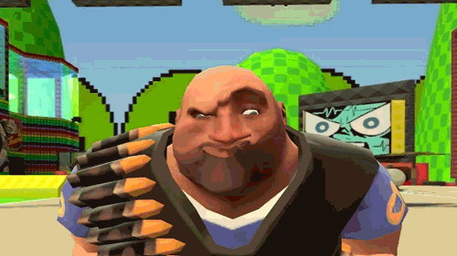
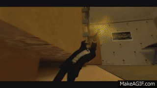
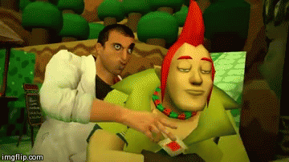
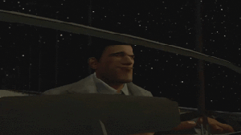
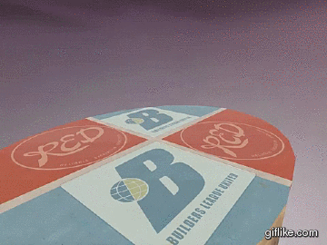

Who was Kitty0706?Colin Wyckoff (Kitty0706) is widely considered to be the greatest GModder of all time and has gone on to define an entire era of YouTube animation. Colin started his GMod career at a young age and almost immediately gained fame in 2009 with releases such as Left 4 Farts, and his Moments with Heavy series. Colin was a master at his craft, his work just kept getting better! Skip ahead only 3 years to 2012 and Colin releases his magnum opus, Team Fabulous 2 which raked in millions of views. Sadly, it was also around this time that Colin began a battle with Leukemia, though he did not let it take over his life, he continued to improve his skills and make content until the very end. He passed away in 2015 at the age of 20.What makes a Kitty0706 video unique?Colin has a very recognizable style; it's bombastic in a cartoon slapstick kind of way. Everything has impact with the help of his masterful video and sound editing skills! There's never a dull moment in a Kitty0706 video! Watch a couple, you'll see what I mean!     |